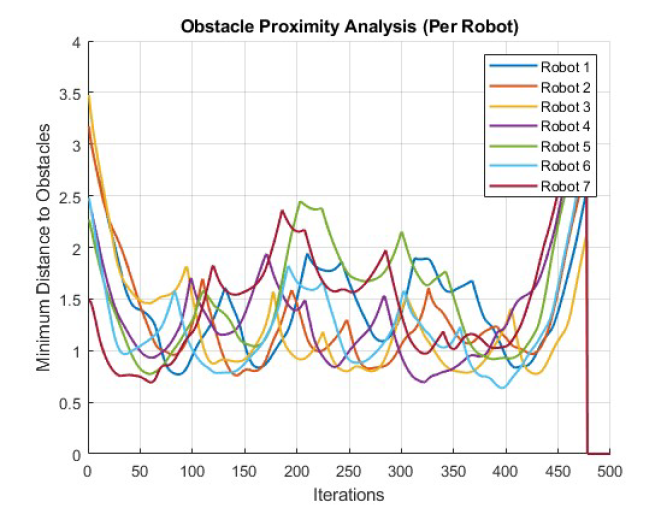
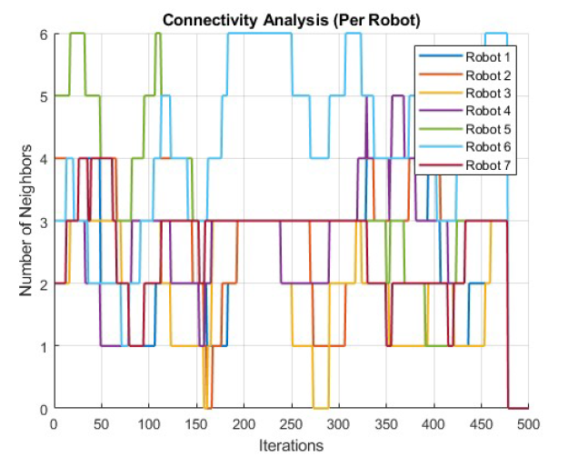

Project · Multi-Agent Systems · MATLAB
Dynamic Swarm Robotics for Sustaining Natural Environments
Decentralized Control · Triangular Lattice Formation · Obstacle Avoidance

This project develops a swarm capable of uniform coverage and structural stability for tasks such as environmental monitoring, cleanup, and conservation — operating safely in cluttered or hazardous terrains. The goals achieved through this project are:
- Maintain a triangular lattice for precise coverage
- Dynamically avoid obstacles
- Converge reliably to target locations
Control Strategy
The Dynamic Swarm Robotics project implements a fully decentralised control strategy in which each robot maintains an equilateral triangular lattice while converging on a specified goal. Agents compute their motion using four local interaction forces — cohesion toward the swarm centroid, alignment toward the target, inter-robot repulsion, and obstacle avoidance — to ensure both formation stability and collision-free navigation. MATLAB-based simulations confirm that the triangular lattice persists even in cluttered environments, and that "virtual" obstacle agents enable robots to bypass barriers and seamlessly reform the lattice.


Performance metrics reveal robust navigation efficiency across different obstacle densities and consistently low computation latency per time step, validating the approach's scalability and real-time applicability.
- The images show the connectivity analysis of each robot with its swarm group — indicating that at any moment each robot is connected to other members of the swarm group. The simulation is also shown here.
- Project report and code are available on GitHub.
- More detailed report here 👉 Link